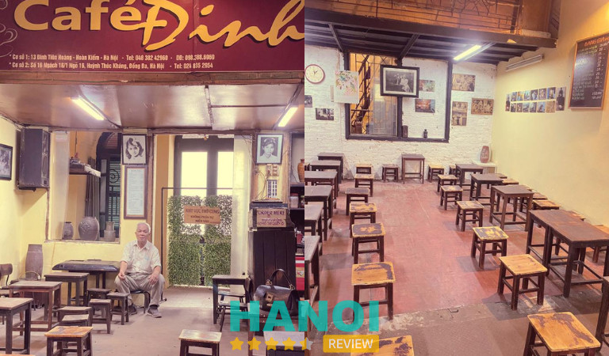
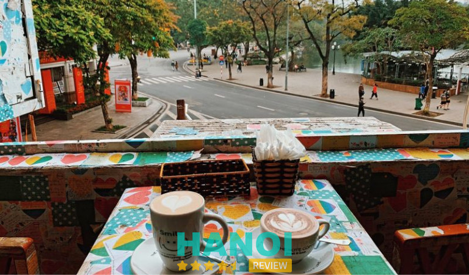
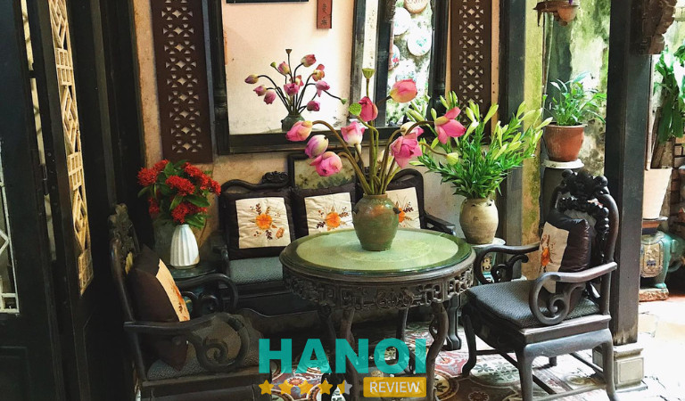
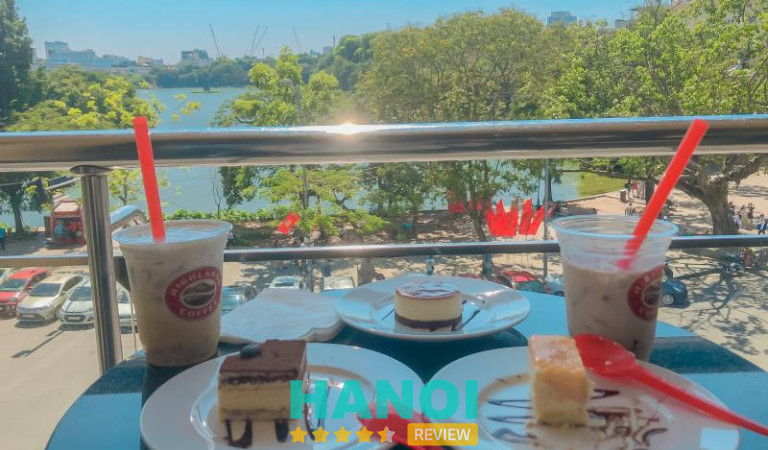
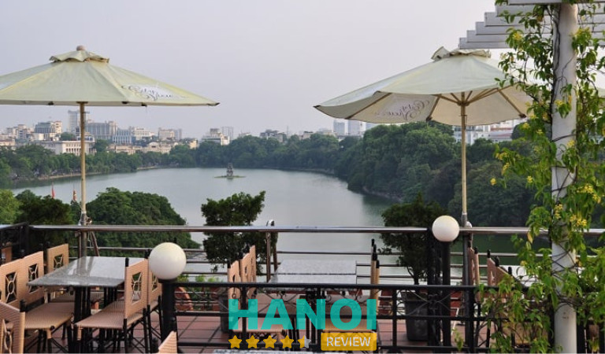
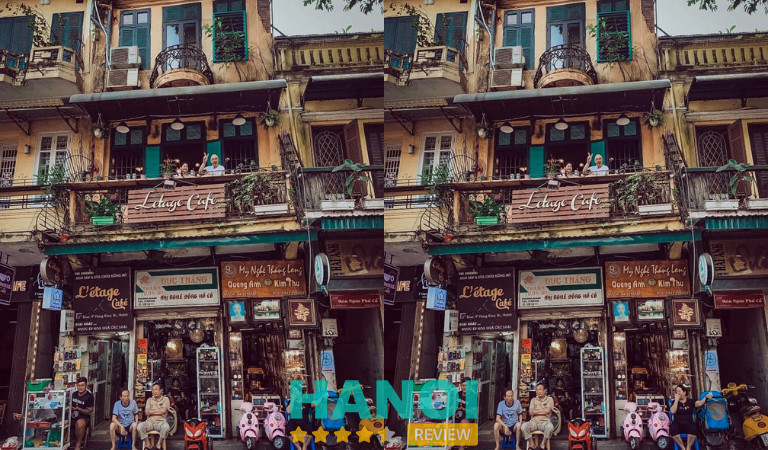
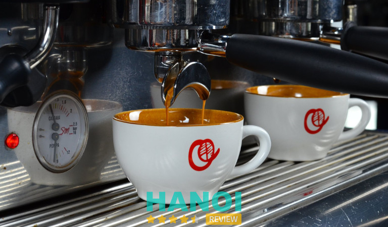
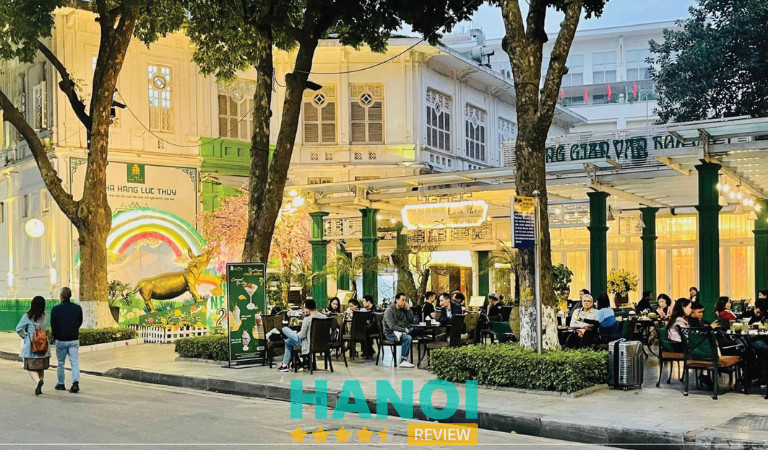
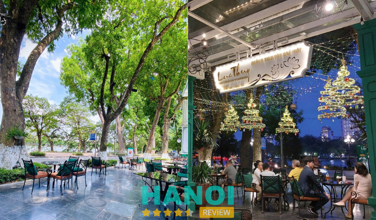
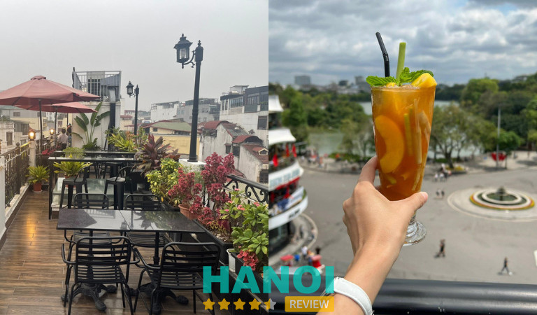

10 Quán cafe view Hồ Gươm cực đẹp, đáng checkin nhất
Những quán cafe view Hồ Gươm luôn thu hút đông đảo du khách và người dân địa phương nhờ có không gian tuyệt đẹp với tầm nhìn bao quát ra hồ nước xanh mát. Từ đây, bạn có thể vừa thưởng thức ly cà phê thơm ngon, vừa chiêm ngưỡng vẻ cổ kính của tháp Rùa và khung cảnh tĩnh lặng của Hồ Gươm.
Top 10 quán coffee có góc view ngắm Hồ Gươm rộng nhất
Hồ Gươm là điểm tham quan nổi tiếng giữa lòng Hà Nội bởi vẻ đẹp nên thơ. Với view hướng ra mặt nước trong xanh, những quán cà phê gần Hồ Gươm không chỉ mang đến không gian thư giãn lý tưởng mà còn là nơi check-in hoàn hảo cho những tín đồ sống ảo.
Nếu bạn đang tìm kiếm một điểm dừng chân để vừa nhâm nhi ly cà phê, vừa thả hồn ngắm cảnh Hồ Gươm bình yên, thì hãy cùng HaNoiReview khám phá ngay những địa điểm được gợi ý trong bài viết dưới đây.
Đinh Cafe
Đinh Cafe là một trong những quán cà phê lâu đời và nổi tiếng nhất nhì ở Hà Nội. Quán nằm trên tầng hai của một ngôi nhà cổ ở phố Đinh Tiên Hoàng, với tầm nhìn tuyệt đẹp ra Hồ Gươm.
Tuy không có biển hiệu hay chỉ dẫn rõ ràng, nhưng chính điều này lại tạo nên nét cuốn hút đặc biệt của quán. Để lên được Đinh Cafe, bạn sẽ phải đi qua một con ngõ nhỏ và leo lên cầu thang gỗ chật hẹp, cảm giác như bước vào một thế giới hoài niệm giữa lòng Hà Nội.

Không gian quán nhỏ nhắn, mộc mạc, với những bộ bàn ghế gỗ giản dị, bức tranh đen trắng treo tường và các chi tiết trang trí đậm chất cổ xưa. Từng góc của quán đều mang hơi thở của thời gian, khiến người ta như lạc vào những năm cuối thế kỷ 20, khi Hà Nội còn giữ nguyên nét tĩnh lặng và cổ kính.
Vị trí được yêu thích nhất tại quán chính là ban công nhỏ, nơi bạn có thể ngắm nhìn trọn vẹn Hồ Gươm và phố Đinh Tiên Hoàng tấp nập người qua lại. Ngồi đây, gió từ hồ thổi vào mang theo cái lạnh dễ chịu của mùa đông Hà Nội, cùng với hương thơm nhẹ nhàng từ ly cà phê trứng nóng hổi, bạn sẽ cảm nhận được sự ấm áp len lỏi qua từng giây phút.
Được mở cửa từ năm 1990, Đinh Cafe từ lâu đã trở thành một quán cà phê với “góc view huyền thoại” gắn liền biết bao thế hệ sinh viên Hà Nội.
Nếu bạn muốn tìm về chút hoài niệm, chút yên bình giữa lòng Hà Nội tấp nập, hãy ghé qua Đinh Cafe. Nơi bạn không chỉ thưởng thức được ly cà phê thơm ngon mà còn được hòa mình vào không gian xưa cũ đầy kỷ niệm.
Thông tin liên hệ:
- Địa chỉ: Tầng 2, 13 Đinh Tiên Hoàng, Q. Hoàn Kiếm, Hà Nội
- Điện thoại: 0828 826 482
- Email: dinhcafe13@gmail.com
- Facebook: FB.com/DinhCafe13
Xem thêm: 10 Quán coffee đẹp nhất phố Hoàng Cầu, Hà Nội nên trải nghiệm
The Note Coffee
The Note Coffee là quán cà phê độc đáo và ấn tượng ở Hà Nội, tọa lạc ngay trên phố Đinh Tiên Hoàng, với tầm nhìn trực diện ra Hồ Gươm thơ mộng.
Điều làm nên sức hút đặc biệt của quán không phải là sự hào nhoáng hay hiện đại mà là không gian ngập tràn những tờ giấy note đầy màu sắc. Khắp các bức tường của The Note Coffee được phủ kín bởi những tờ note nhỏ xinh, nơi mỗi người khách đến đây đều có thể ghi lại một lời nhắn nhủ, một câu chuyện hoặc cảm xúc riêng của mình và dán lên.

Chính vì vậy, The Note Coffee không chỉ là một quán cà phê, mà còn là nơi lưu giữ những khoảnh khắc và kỷ niệm của hàng trăm nghìn người đã từng ghé qua. Từ những mẩu giấy đầy tình cảm đến những câu chúc dễ thương, tất cả đều tạo nên một không gian ấm áp và đầy lãng mạn.
Thêm vào đó, The Note Coffee còn gây ấn tượng bởi “chiếc” view cực chất nhìn ra Hồ Gươm. Khi ngồi tại ban công của quán, bạn có thể ngắm nhìn toàn cảnh hồ nước xanh biếc và nhịp sống tấp nập của Hà Nội. Vị trí đắc địa này khiến mỗi ly cà phê trở nên đặc biệt hơn, khi không chỉ là hương vị ngon lành mà còn là sự kết hợp với khung cảnh thiên nhiên thơ mộng.
Với đồ uống ngon miệng và không gian thân thiện, The Note Coffee đích thị là một quán cà phê có thể giúp bạn quên đi những nỗi buồn, nơi mọi người đến và để lại những mẩu ký ức ngọt ngào. Dù bạn là ai, khi bước vào The Note Coffee, chắc chắn đều sẽ cảm thấy gần gũi, thân thương và đầy cảm xúc.
Thông tin liên hệ:
- Địa chỉ: 64 Lương Văn Can, Q. Hoàn Kiếm, Hà Nội
- Điện thoại: 0975 194 466
- Email: thenotecoffee@gmail.com
- Facebook: FB.com/TheNoteCoffee
Cafe Phố Cổ
Cafe Phố Cổ cũng là điểm dừng chân đặc biệt mà bất kỳ ai khi đến Hà Nội cũng nên ghé qua ít nhất một lần. Nằm ẩn mình tại số 11 Hàng Gai, giữa lòng khu phố cổ tấp nập, quán không chỉ cuốn hút bởi vị trí đắc địa mà còn mang đến không gian yên bình, nhẹ nhàng, hoàn toàn tách biệt khỏi nhịp sống xô bồ bên ngoài.
Không giống những quán cà phê sang trọng và hiện đại xung quanh Hồ Gươm, Cafe Phố Cổ tạo cho thực khách cảm giác gần gũi, giản dị với phong cách hoài cổ. Để tìm được quán, bạn sẽ phải rẽ qua một con ngõ nhỏ, không có biển chỉ dẫn rõ ràng, nhưng chính sự “kín đáo” này lại làm tăng thêm sự tò mò và thú vị cho những ai lần đầu ghé thăm.

Khi bước vào, không gian mộc mạc với những bộ bàn ghế đơn sơ và bức tường cũ kỹ mang lại cảm giác yên bình lạ kỳ.
Một điểm nhấn đặc biệt của Cafe Phố Cổ chính là tầm nhìn toàn cảnh tuyệt đẹp từ tầng 2 hoặc tầng 3 của quán. Từ đây, bạn có thể ngắm nhìn toàn bộ khung cảnh thơ mộng của Hồ Gươm, với những hàng cây xanh mướt và dòng người qua lại.
Về thực đơn, Cafe Phố Cổ không quá nổi bật với những thức uống cầu kỳ, mà chủ yếu tập trung vào những món đồ uống giản dị như cà phê nguyên chất, sinh tố và nước ép. Tuy nhiên, hương vị cà phê trứng tại đây luôn khiến thực khách phải quay trở lại.
Với mức giá bình dân dao động từ 20.000 – 250.000 VNĐ, quán phù hợp với mọi đối tượng khách hàng, từ người địa phương đến du khách. Do vậy, nếu bạn đang tìm kiếm một nơi để thư giãn, tránh xa nhịp sống hối hả, ngắm cảnh Hồ Gươm và trải nghiệm không gian đậm chất hoài cổ, thì Cafe Phố Cổ chính là điểm đến lý tưởng.
Thông tin liên hệ:
- Địa chỉ: 11 Hàng Gai, Q. Hoàn Kiếm, Hà Nội
- Điện thoại: 024 3928 8153
- Facebook: FB.com/cafephocohanggai
Xem thêm: 10 Quán Pub ở Hà Nội nổi tiếng, được nhiều người yêu thích nhất
Highlands Coffee – Hàm Cá Mập
Highlands Coffee Hồ Gươm rất thích hợp dành cho những ai muốn vừa thưởng thức cà phê và vừa chiêm ngưỡng khung cảnh tuyệt đẹp của Hà Nội. Tọa lạc tại tầng 3 của tòa nhà Hàm Cá Mập, Highlands Coffee mang đến cho bạn trải nghiệm độc đáo với view bao quát Hồ Gươm và phố đi bộ nhộn nhịp.
Đến đây, bạn không chỉ được thả hồn vào khung cảnh hồ nước xanh biếc mà còn được thưởng thức những thức uống ngon miệng với mức giá hợp lý, chỉ từ 29.000 – 75.000 VNĐ.

Hơn nữa, thực đơn của quán rất phong phú, từ cà phê truyền thống, trà đào sả thơm ngon cho đến chocolate đậm đà và các loại bánh ngọt hấp dẫn. Trong đó, trà đào sả là thức uống được nhiều bạn trẻ yêu thích, với hương vị chanh sả thanh mát và miếng đào giòn thơm, giúp xua tan mệt mỏi và căng thẳng.
Khi đến Highlands Coffee vào một buổi sáng mùa đông, khi sương mờ phủ nhẹ Hồ Gươm, bạn sẽ cảm nhận được sự bình yên và thư thái đặc trưng của Hà Nội. Ngoài khu vực ban công, không gian bên trong quán rộng rãi, thoáng đãng, được trang trí đẹp mắt cũng rất thích hợp để bạn nhâm nhi cafe và các loại đồ uống khác.
Tuy nhiên, một điểm trừ nhỏ là quán không có chỗ gửi xe, bạn sẽ phải tìm nơi gửi xe quanh khu vực với chi phí khoảng 10.000 VNĐ.
Thông tin liên hệ:
- Địa chỉ: 5 Đinh Tiên Hoàng, Q. Hoàn Kiếm, Hà Nội
- Điện thoại: 1900 1755
- Email: customerservice@highlandscoffee.com.vn
- Website: highlandscoffee.com.vn
- Facebook: FB.com/pg/highlandscoffeevietnam
Cộng Cà Phê
Cộng Cà Phê với vị trí nằm ngay trên con phố Cầu Gỗ sầm uất, không chỉ nổi tiếng với view “tỷ đô” hướng thẳng ra Hồ Hoàn Kiếm và Quảng trường Đông Kinh Nghĩa Thục, mà còn ghi dấu ấn với không gian hoài cổ và hương vị cà phê mang đậm phong cách riêng biệt.
Khi bước vào Cộng, bạn sẽ ngay lập tức bị cuốn hút bởi không gian nghệ thuật đậm chất retro, với những món đồ trang trí gợi nhớ về thời kỳ bao cấp. Không gian ấm cúng và mộc mạc ấy tạo nên một trải nghiệm đầy cảm xúc, khiến khách hàng như quay ngược về quá khứ.

Bên cạnh việc có không gian đặc biệt, Cộng Cà Phê Cầu Gỗ còn nổi bật với thực đơn đa dạng, trong đó không thể không nhắc đến những ly cà phê thơm ngon đặc trưng của quán. Cà phê ở đây mang một hương vị riêng, đậm đà nhưng lại có chút ngọt dịu, phù hợp với khẩu vị của cả những thực khách khó tính nhất.
Bạn có thể thưởng thức từ cà phê sữa đá truyền thống, cho đến những ly cà phê cốt dừa thơm ngậy – một món “đinh” được nhiều người yêu thích. Đồ uống tại Cộng Cà Phê có mức giá dao động từ 20.000 – 100.000 VNĐ, vô cùng hợp lý so với chất lượng và vị trí đẹp của quán.
Vào những ngày cuối tuần, khi không khí trở nên mát mẻ, Cộng Cà Phê là nơi lý tưởng để bạn cùng bạn bè, người thân nhâm nhi ly cà phê, trò chuyện và ngắm nhìn Hồ Gươm thơ mộng. Đặc biệt, view tại Cộng Cầu Gỗ sẽ cho bạn những bức ảnh check-in “triệu like”, với khung cảnh Hà Nội nhộn nhịp nhưng vẫn giữ được nét yên bình.
Thông tin liên hệ:
- Địa chỉ: 116 Cầu Gỗ, Q. Hoàn Kiếm, Hà Nội
- Điện thoại: 0911 811 149
- Email: info@congcaphe.com
- Website: congcaphe.com
- Facebook: FB.com/CongCaphe
Xem thêm: 10 Quán bún chả ngon ở Hà Nội nổi tiếng đông khách nhất
L’etage Cafe
L’etage Café cũng là một trong những địa điểm không thể bỏ qua khi bạn muốn thưởng thức cafe ngay bên cạnh Hồ Gươm.
Dù không gian quán hơi nhỏ, nhưng chính điều đó lại tạo nên sự ấm cúng và gần gũi, khiến bạn cảm thấy như đang ở trong một ngôi nhà thân thuộc. Khi bước vào L’etage, bạn sẽ lập tức bị cuốn hút bởi cách bày trí cầu kỳ theo phong cách Pháp, mỗi góc nhỏ trong quán đều mang đến những khung cảnh đẹp như tranh vẽ để bạn thỏa sức “sống ảo”.

Điểm nhấn khác của L’etage nằm ở khu ban công nhỏ xinh, nơi bạn có thể vừa thưởng thức cà phê vừa ngắm nhìn Hồ Hoàn Kiếm – một trong những biểu tượng của Hà Nội. Và chiếc ban công với view tuyệt đẹp này đã trở thành “mục tiêu” chính của nhiều khách hàng khi tìm đến quán. Chỉ cần giơ máy lên là bạn đã có ngay những bức ảnh triệu like để lưu giữ khoảnh khắc đáng nhớ.
Đặc biệt, menu của L’etage khá đa dạng với những món thức uống được chăm chút cả về chất lượng lẫn cách trình bày. Từ những ly cà phê thơm ngon đến các loại trà và nước ép, mỗi món đều mang lại sự hài lòng cho thực khách.
L’etage Café không chỉ là một quán cà phê, mà còn là một nơi lý tưởng để bạn thư giãn, giải tỏa những căng thẳng sau những ngày làm việc mệt mỏi. Hãy đến và cảm nhận sự hối hả nhộn nhịp của cuộc sống đô thị qua khung cảnh Hồ Gươm từ một góc nhìn khác.
Với không gian ấm áp, những đồ uống tuyệt vời và một vị trí đắc địa, L’etage Café hứa hẹn sẽ mang đến cho bạn những trải nghiệm tuyệt vời trong chuyến du lịch Hà Nội của mình.
Thông tin liên hệ:
- Địa chỉ: 9A Hàng Khay, Q. Hoàn Kiếm, Hà Nội
- Điện thoại: 024 3824 5322
- Email: zinnievalikie@gmail.com
- Facebook: FB.com/letagecafe
Helio Vietnam Specialty Coffee
Helio Vietnam Specialty Coffee từ lâu đã trở thành địa điểm yêu thích của nhiều người dân Hà Thành. Nơi đây cực kỳ nổi tiếng với các món thức uống ngon và không gian nhìn ra Hồ Gươm tuyệt đẹp.
Nằm ở vị trí trung tâm thành phố, Helio luôn thu hút một lượng khách đông đảo, từ các bạn trẻ đến du khách nước ngoài. Mặc dù quán lúc nào cũng đông khách, nhưng chất lượng phục vụ của Helio không hề bị giảm sút.

Nhân viên tại đây phục vụ rất nhiệt tình và chu đáo, đảm bảo rằng mỗi đồ uống đều được phục vụ nhanh chóng và đúng cách. Đảm bảo bạn sẽ không phải chờ đợi lâu để thưởng thức những món đồ uống thơm ngon tại đây.
Đặc biệt, đồ uống của Helio Vietnam Specialty Coffee được pha chế rất hợp khẩu vị của nhiều thực khách. Một lần thưởng thức tại đây, bạn sẽ khó có thể quên được hương vị đậm đà và sự tinh tế trong từng ly cà phê.
Bên cạnh đó, quán còn phục vụ đa dạng các món ăn nhẹ như kem, bánh mì và pizza, tạo thêm sự phong phú cho thực đơn và giúp bạn có một trải nghiệm trọn vẹn hơn khi ghé thăm.
Thông tin liên hệ:
- Địa chỉ: 57B Đinh Tiên Hoàng, P. Hàng Bạc, Q. Hoàn Kiếm, Hà Nội
- Điện thoại: 0243 518 7054
- Email: helio@heliocoffee.com.vn
- Website: heliocoffee.com.vn
- Facebook: FB.com/HelioVietnamSpecialtyCoffee
Xem thêm: 10 Quán bún đậu mắm tôm Phố Cổ Hà Nội ngon nổi tiếng, lâu đời
Thủy Tạ Legend
Thủy Tạ Cafe hoạt động từ năm 1958, trở thành một phần không thể thiếu trong nét văn hóa ẩm thực của thủ đô. Với vị trí đắc địa ngay sát bờ hồ, quán mang đến cho thực khách cơ hội thưởng thức những món đồ uống ngon trong một không gian lãng mạn, nhìn ra cầu Thê Húc và mặt hồ lăn tăn.
Quán nổi tiếng với đa dạng các loại đồ uống từ cà phê, trà đến sinh tố, nhưng có lẽ điều khiến Thủy Tạ trở nên đặc biệt nhất chính là những ly kem tươi thơm ngon.

Dù giá kem ở đây khá cao, từ 70.000 VND đến 150.000 VND cho một ly. Tuy nhiên, nếu được thưởng thức một ly kem mát lạnh giữa tiết trời se lạnh của Hà Nội chắc chắn sẽ làm bạn hài lòng.
Ngoài kem, quán còn cung cấp nhiều loại thức uống khác mang hương vị đặc trưng, giúp bạn thư giãn và tận hưởng không khí trong lành từ hồ. Không gian ngoài trời với tán cây xanh mát và khung cảnh Hồ Gươm tuyệt đẹp tạo điều kiện lý tưởng để bạn có những khoảnh khắc thư giãn và tận hưởng cuộc sống.
Có thể nói, Thủy Tạ Cafe không chỉ là nơi để thưởng thức đồ uống mà còn là điểm đến lý tưởng để ngắm nhìn cảnh sắc Hồ Gươm. Nơi bạn có thể tìm kiếm những giây phút bình yên giữa lòng Hà Nội nhộn nhịp và đồng thời được trải nghiệm hương vị ẩm thực truyền thống của phố cổ.
Thông tin liên hệ:
- Địa chỉ: 1 Lê Thái Tổ, Q. Hoàn Kiếm, Hà Nội
- Điện thoại: 0243 828 8148
- Website: thuyta.vn
- Facebook: FB.com/thuytahanoi
Lục Thủy Cafe & Restaurant
Lục Thủy Cafe & Restaurant nằm ngay trong khuôn viên phố đi bộ, mang đến cho bạn một không gian vừa sang trọng, vừa lãng mạn, cùng với view tuyệt đẹp hướng ra hồ. Đây không chỉ là nơi để thưởng thức cà phê mà còn là tổ hợp dịch vụ đa dạng với các món ăn, sự kiện và âm nhạc.
Quán đặc biệt thu hút nhiều du khách, nhất là vào những dịp cuối tuần, khi bạn có thể vừa nhâm nhi ly cà phê thơm ngon vừa ngắm nhìn dòng người tấp nập dạo quanh hồ.

Tuy nhiên, do vị trí đắc địa và lượng khách đông đúc, giá cả tại Lục Thủy có phần cao hơn so với các quán khác quanh hồ, với mức giá trung bình từ 50.000 VND. Nhưng điều đó hoàn toàn xứng đáng với trải nghiệm mà bạn nhận được.
Menu tại Lục Thủy rất phong phú và đa dạng, từ các loại cà phê, trà, đồ uống lạnh đến những món ăn nhẹ và tráng miệng hấp dẫn. Bên cạnh việc thưởng thức đồ uống, bạn cũng có thể chọn cho mình một bữa ăn ngon miệng giữa không gian yên bình của những tán cây xanh mát, giúp bạn thư giãn và tận hưởng cuộc sống.
Ngoài ra, nhà hàng còn là địa điểm lý tưởng để tổ chức các sự kiện lớn như tiệc cưới hay các buổi biểu diễn âm nhạc. Trong không gian rộng rãi, thoáng đãng với cách bài trí ấm cúng giống như những quán cà phê kiểu Châu Âu, sẽ tạo nên những kỷ niệm đẹp cho bạn và khách mời.
Thông tin liên hệ:
- Địa chỉ: 16 Lê Thái Tổ, Q. Hoàn Kiếm, Hà Nội
- Điện thoại: 0908 868 338
- Email: contact@lucthuy.com
- Website: lucthuy.com
- Facebook: FB.com/nhahanglucthuy
Xem thêm: 10 Quán lươn ngon tại Hà Nội chuẩn vị, không thể bỏ qua
La Soie Coffee
La Soie Coffee là quán cafe cuối cùng có view ngắm nhìn Hồ Gươm cực chất mà HaNoiReview muốn gợi ý đến bạn trong bài viết này. Quán nổi bật với không gian rộng rãi, sang trọng và hiện đại, mang đến cho thực khách cảm giác thoải mái và ấm cúng ngay từ cái nhìn đầu tiên.
Với những chiếc ghế màu đen tinh tế và thiết kế tỉ mỉ, La Soie Coffee không chỉ thu hút bạn bởi sự hiện đại mà còn bởi tầm nhìn ngoạn mục ra Hồ Hoàn Kiếm.
Bạn có thể lựa chọn cho mình một chỗ ngồi ưng ý, từ khu vực ngoài trời mát mẻ cho đến không gian trong nhà ấm áp hoặc ngoài hiên, nơi bạn có thể thưởng thức không khí trong lành và ngắm nhìn vẻ đẹp của hồ.

Đội ngũ nhân viên tại La Soie Coffee được nhiều khách hàng đánh giá cao với sự nhiệt tình, thân thiện và phong cách phục vụ nhanh chóng. Họ luôn sẵn sàng lắng nghe và đáp ứng nhu cầu của khách hàng, giúp bạn có một trải nghiệm thoải mái và dễ chịu khi đến quán.
Về menu tại La Soie Coffee cũng rất phong phú với các loại thức uống chất lượng. Mỗi món đều được bày trí đẹp mắt và hấp dẫn. Đây là một trong những lý do khiến quán trở thành địa điểm lý tưởng để bạn thư giãn cùng bạn bè và người thân, đặc biệt trong những khoảnh khắc đặc biệt hay những cuộc hẹn hò thú vị.
Hãy đến với La Soie Coffee để tận hưởng những giây phút tuyệt vời bên người thân yêu, ngắm nhìn Hồ Hoàn Kiếm trong không gian lung linh, ấm cúng và đầy sắc màu. Đảm bảo rằng bạn sẽ có những kỷ niệm khó quên trong hành trình khám phá ẩm thực cafe của Hà Nội.
Thông tin liên hệ:
- Địa chỉ: 111 Hàng Đào, Q. Hoàn Kiếm, Hà Nội
- Điện thoại: 0985 255 225
- Email: info@hoteldelasoie.com
- Facebook: FB.com/LaSoieCoffee
10 Lưu ý khi tìm quán cafe view Hồ Gươm để thưởng thức
Khi tìm quán cafe với view Hồ Gươm để thưởng thức, bạn nên chú ý đến một số điều sau đây để có được trải nghiệm tốt nhất:
- Vị trí: Nên chọn quán nằm gần bờ hồ hoặc có view hướng thẳng ra Hồ Gươm. Điều này giúp bạn có thể dễ dàng ngắm cảnh và cảm nhận không khí trong lành của hồ.
- Không gian: Kiểm tra xem quán có không gian thoáng đãng, sạch sẽ và được trang trí đẹp mắt hay không. Một không gian dễ chịu sẽ làm cho trải nghiệm thưởng thức cafe của bạn thêm phần trọn vẹn.
- Thời gian mở cửa: Một số quán có thể đóng cửa sớm hoặc không mở cửa vào những ngày lễ. Hãy kiểm tra giờ mở cửa trước khi đến để tránh sự thất vọng.
- Menu thức uống: Xem xét thực đơn của quán, đặc biệt là các món cafe và đồ uống khác. Nên chọn quán có đa dạng món uống và được chăm chút về chất lượng.
- Giá cả: Giá đồ uống ở các quán cafe view hồ thường cao hơn so với những quán trong hẻm. Hãy xác định ngân sách của bạn trước khi đi để chọn quán phù hợp.
- Dịch vụ chăm sóc khách hàng: Tìm hiểu về chất lượng phục vụ của quán thông qua đánh giá của khách hàng. Một quán cafe có đội ngũ nhân viên thân thiện, chu đáo sẽ giúp bạn có một trải nghiệm dễ chịu.
- Thời điểm ghé thăm: Thời điểm lý tưởng để thưởng thức cafe là buổi sáng sớm hoặc buổi chiều khi thời tiết mát mẻ và không gian yên tĩnh hơn. Buổi tối cũng là một lựa chọn thú vị khi hồ được thắp sáng lung linh.
- Chỗ ngồi: Nếu bạn thích không gian ngoài trời, hãy kiểm tra xem quán có đủ chỗ ngồi cho bạn. Một số quán có thể đông khách vào cuối tuần, vì vậy việc đặt chỗ trước là một ý tưởng tốt.
- Gửi xe: Kiểm tra xem quán có chỗ gửi xe an toàn hay không. Một số quán nằm trong khu vực đông đúc có thể không có chỗ đậu xe gần đó.
- Đánh giá và phản hồi: Tìm hiểu ý kiến của khách hàng trước đó qua các trang mạng xã hội hoặc các ứng dụng đánh giá để có cái nhìn tổng quan về chất lượng quán.
Không chỉ là nơi để thưởng thức cafe, các quán được gợi ý ở bài viết trên còn là nơi giúp bạn quan sát những góc nhìn thú vị về cuộc sống và văn hóa Hà Nội, đảm bảo sẽ để lại trong bạn những ấn tượng khó quên. Vì vậy, hãy cùng bạn bè hoặc người thân đến đây, để hòa mình vào không gian tuyệt vời và ghi lại những kỷ niệm đẹp bên Hồ Gươm.
Có thể bạn quan tâm
- 5 Địa chỉ cho thuê áo dài tại Q. Hoàn Kiếm uy tín, đẹp, giá rẻ
- 5 Tiệm Nail tại quận Hoàn Kiếm thợ chuyên nghiệp, làm đẹp, rẻ
- 5 Salon làm tóc tại quận Hoàn Kiếm dịch vụ tốt, đông khách
- 5 Tiệm Nail tại quận Hai Bà Trưng dịch vụ tốt, đáng tin cậy
DOANH NGHIỆP: Đăng tải thông tin MIỄN PHÍ.
Tin đọc nhiều


10 Quán cơm ngon tại Phố Cổ Hà Nội đặc trưng vị truyền thống
Đã đến với Phố Cổ Hà Nội ngoài việc tham quan những địa danh nổi tiếng và các khu vui chơi thì bạn nhất định...

5 Quán Cafe Rooftop ở Hà Nội view ngắm cảnh chill, lãng mạn
Với "chiếc view triệu đô" cực chill, lãng mạn và đồ uống thơm ngon, các quán Cafe Rooftop ở Hà Nội là điểm hẹn tuyệt...

15 Quán Cafe Phố Cổ nhất định phải thử khi đến Hà Nội
Khi đến Hà Nội, ngoài việc khám phá những di tích lịch sử, không thể bỏ qua trải nghiệm ngồi tại những quán cafe Phố...

10 Quán phở gà Phố Cổ lâu đời, nhất định phải thử khi đến đây
Phở gà Hà Nội, một trong những đặc sản nổi tiếng của ẩm thực Việt Nam, với sự kết hợp hoàn hảo giữa gà tươi...

Trở thành người đầu tiên bình luận cho bài viết này!